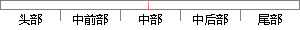

所有创建好的任务控制块会连接到另外一个任务控制块链表中，当系统进行调度时，便会从这一链表中选出任务块来运行任务。
片段位置图

相似结果
相似片段：器的控制权由运行进程转移到另外一个就绪任务时所...它的进程控制块就回到空闲进程控制块链表中.图2-3...就可以对程序进行编译和连接.然后输入TEST就可以运行...
| 标题 | 《嵌入式操作系统μC/OS-Ⅱ的实时性研究》 |
| 对比库 | 中国学位论文全文数据库 |
| 作者 | 马德新 |
| 机构 | 山东大学 |
| 分类 | 计算机系统结构 |
| 年份 | 2006 |
| 相似率 | 60% （轻度抄袭） |
※ 片段修改建议 ※
近似词参考：- 任务：使命 义务
- 系统：体系
- 进行：举行
- 中选：当选
- 另外：别的 此外
- 调度：调剂 调理
- 控制：节制
- 所有：全部
系统自动生成语句：全部创建好的使命节制块会连接到别的一个使命节制块链表中，当体系举行调剂时，便会从这一链表当选出使命块来运行使命。
注：本片段修改建议为系统自动生成，仅供参考。